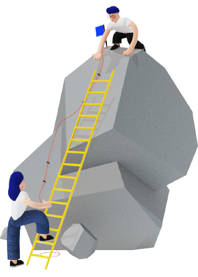
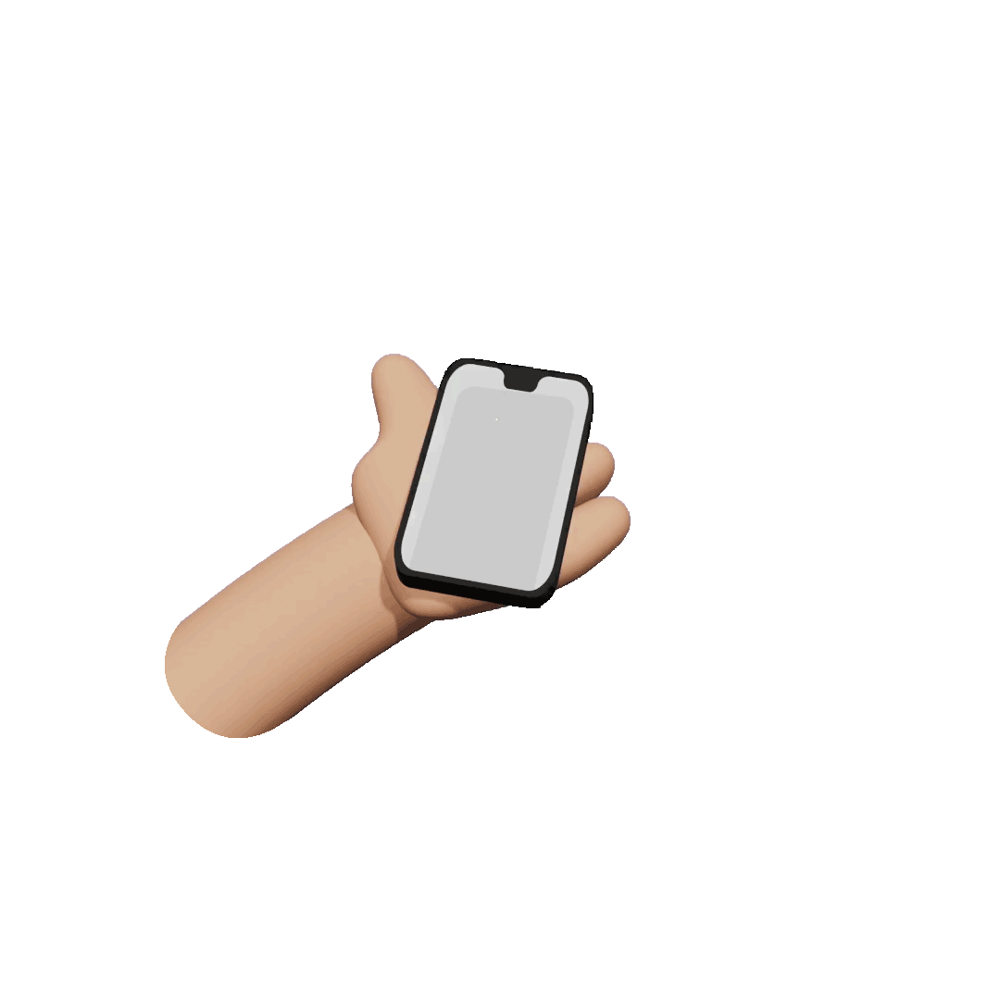
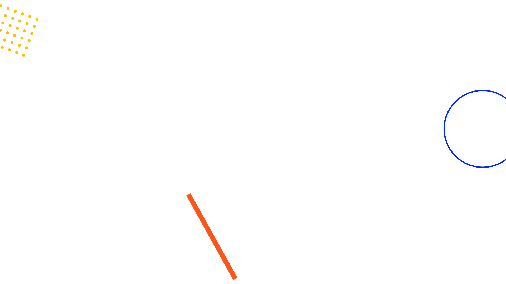
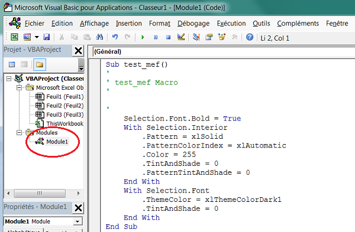
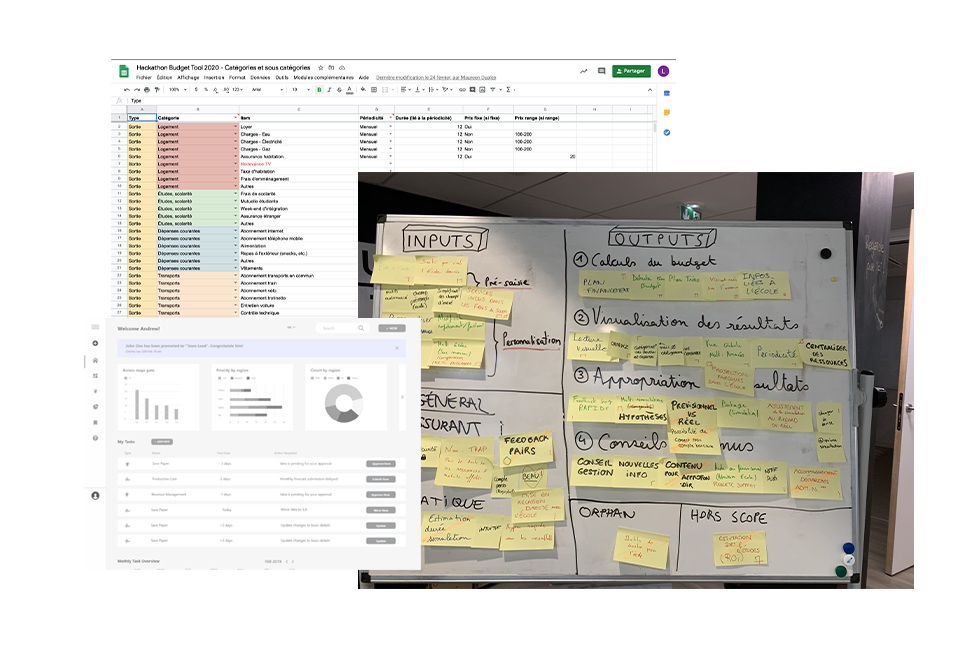
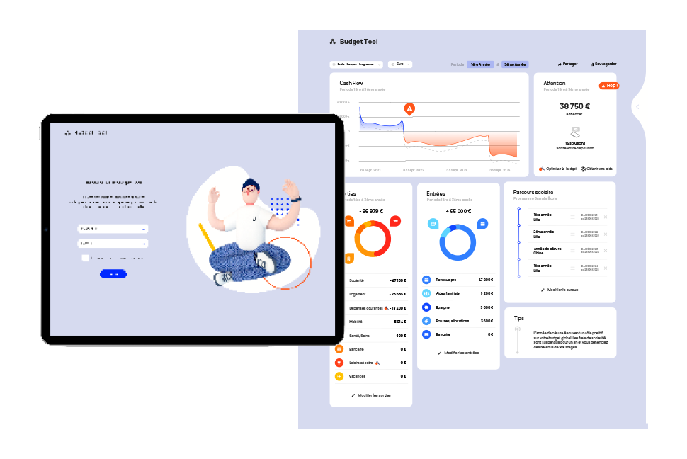
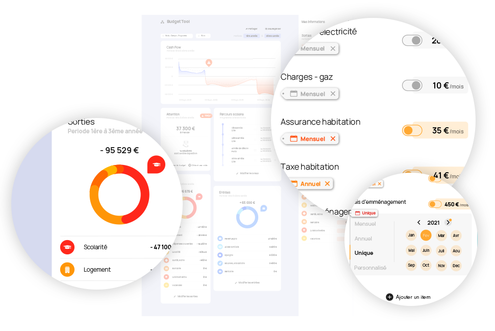
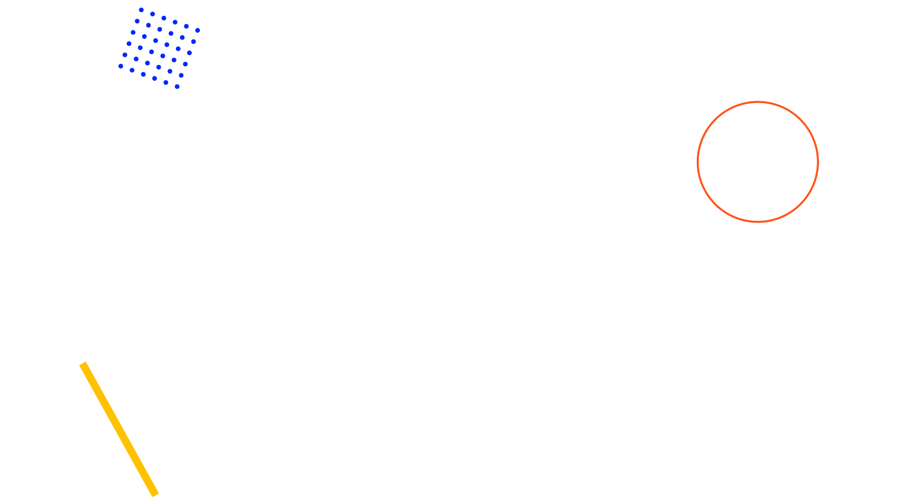

Étudiant
Hello Everyone
Je suis Badis DEGHDAK 24 ans, Product Owner Junior dans le groupe SELOGER. Passionné de nouvelles technologies et de l'Humain, c'est naturellement que je tourne mon cursus scolaire vers des savoirs que je pourrais réutiliser dans différents domaines, notamment ceux de la santé ou de l'hôtellerie/restauration.
Seloger
Mon alternance

Le groupe.
Le groupe SELOGER représente aujourd'hui plus de 600 salariés. Avec plus de 14 sites web allant du luxe au marché de l'ancien en passant par la construction, c'est le numéro un de la petite annonce immobilière en France, devant de nombreux concurrents comme : Bien ici, PAP, à vendre à louer et Le bon coin. Ce mastodonte n'hésite pas à racheter les concurrents et les compétences qui viennent à manquer. Groupe Axel Springer (propriétaire du groupe SeLoger) géant de l'immobilier et des médias en Europe. Ils ont acquis SELOGER, Logic Immo, meilleurs agents en seulement quelques années ou encore LUX résidence et bien d'autres encore.
Positionnement
Le groupe SELOGER se positionne comme partenaire des pros de l'immobilier et veut rester le numéro un sur le marché français. Il prévoit de s'agrandir rapidement sur différents marchés. SELOGER offre des sites et des services qualitatifs pour avoir un maximum d'utilisateurs qui pourront être utilisés par les clients de SELOGER, c'est-à-dire les pros de l'immobilier notamment.

Parcours simplifié
Des plateformes ultras simplifiées pour une User Expérience optimale
Une multitude de services
Offrir des services en lien avec les besoins utilisateurs pour créer un maximum de trafic
Personnalisation de l'offre
Les prestations sont personnalisées en fonction de la typologie du client ainsi que sa fidélité
L'équipe
L'équipe de l'adfactory comporte beaucoup de monde. Marion HOUDEYE, Bastien GALIBERT, Laetitia MADINIER, Achill JOUFFROY sont mes principaux interlocuteurs.

Strenghts
- Capacité d’innovation (financement) - Compétitivité commerciale et technologique Compétences - Ancrage dans la tête des Français Savoir-faire
Weaknesses
- Méthode de management ralentit l'innovation(silo) - Système informatique en perpétuel évolution - Automatisation laissé de coté
Opportunities
- Marché de la rénovation et de la surélévation - Automatisation - Le corona a permis de montrer la solidité des liens avec les agents pros
Threats
- Lancement des GAFAM dans l'immobilier aux Etats-Unis risque d'importation en Europe Évolution de la technologie - E-privacy
Enjeux
Rester le numéro 1 de la petite annonce immobilière tout en diversifiant les domaines d'activités dans l'immobilier
Valeurs
-> Travailler ensemble -> Etre les numéros 1 -> Travailler pour eux
Missions
Mes Missions et Mes Postes
Dès mon arrivée au sein de l’équipe, j’ai pris le poste d'Account manager pour etre formé sur les logiciels utilisé chez Seloger et Logic Immo - Mettre en ligne des campagnes - Analyser les besoins et expressions des besoins avec recommandations strat - Automatisation des stats
Account manager, Mise en ligne de campagne emailing sms et display via AdManager/Eléphante/cloudmedia/smartAdmanager/Adobe Campaign et utilisation des BDD via mediametrics

J'ai pu avec ce métier comprendre quels logiciels étaient utilisés et comment. J'ai aussi pu observer l'organisation autours des BU de la pub et du produit.


Une fois la prise en main des logiciels faite, J'ai pu m'occuper de mes propres clients. Mettre en ligne les campagnes proposer des produits additionnels pour améliorer les ventes, faire des recommandations strats.
J'ai proposer à ma responsable de m'occuper de l'automatisation des stats qui n'étaient pas une priorité pour le groupe car trop chère mais qui était une réelle perte de temps dans notre équipe. J'ai donc appris le langage VBA et codé le moyen d'extraire les stats mails puis j'ai laissé la main à une autre personne pour les stats display. Il suffisait de montrer la simplicité de l'automatisation et le faible coût que ça engendre par rapport au temps libéré aux équipes.

Assistant chef de marché conception de produits publicitaire

J'ai du élaborer des produits publicitaire innovants non intrusifs afin de pouvoir vendre plus et générer du profil publicitaire sans perdre en expérience client.


J'ai fais ressortir de l'analyse du besoin en publicité un intérêt de former les commerciaux. Ils avaient tendance à se spécialiser sur un produit et le vendre à tour de bras. Sans même réfléchir aux besoins du clients aux autres produits voir aux produits additionnels. J'ai donc organisé des ateliers avec les commerciaux et leurs coachs afin de créer des argumentaires de ventes et des scenarios par clients pour les former à vendre des produits publicitaires adaptés aux besoins de ceux-ci.
Je n'ai pas pu travailler longtemps sur les différents projets j'ai eu en effet l'obligation de faire une passation rapide avec toute mon analyse et mon travail pour passer au poste de Product Owner

Product owner

Durant mon analyse en temps qu'assistant chef de marché je me suis rendu compte de l'existence de différents points de friction qui étaient un problème à la fois pour la vente le suivi et la satisfaction client. Après m'être penché dessus avec l'équipe nous avons travaillé sur une plateforme qui se nomme MyAdFactory qui permet notamment de diminuer le nombre d'intermédiaire entre le commercial et le client.


Cette plateforme a pour objectif de créer un devis simplement et rapidement pour pousser à l'achat compulsif. Permettre aux commerciaux de savoir instantanément combien d'impression de clic et/ou lead sont disponible et à quelle date. La simplification de l'outil la suppression d'intermédiaire et le design minimaliste de la plateforme permet aux commerciaux d'améliorer leurs performances, de vendre plus, améliorer le suivit client, accélérer les processus lié à l'achat et bien sur l'outil permet aux commerciaux d'être en contact direct avec les équipes de productions d'account manager car ils travaillent en étroite collaboration.
La version beta de la plateforme est fonctionnelle, Nous sommes fiers avec Laetitia d'avoir livré un outil aussi indispensable pour permettre au groupe de rester compétitif face à la publicité Facebook et google qui coûte bien moins chère. Notre croissance au niveau de la publicité est basée sur un savoir faire et une qualité de nos base de données ainsi que sur le niveau de qualification de nos leads.

Mon évolution
Un avenir plein d'espoir
Le choix de l'adfactory d’intégrer un étudiant de l’ESD dans l’équipe répondait à un besoin réel dans leur stratégie d’entreprise : pluridisciplinarité, programmation web, graphisme, UX, UI Les missions, au sein du groupe, sont complètes. En tant qu’étudiant, j’ai pu participer à l’évolution d’un projet en commençant par l'analyse jusque la livraison d'une plateforme fini Le volume de missions est conséquent mais grâce à l’esprit d’équipe, il n’y a pas de surcharge de travail. Mes différentes missions m’ont permis d’explorer un grand nombre de domaines d’expertises et d'apprendre à utiliser un grand nombre d'outils, en adéquation avec mon cursus scolaire et mon futur projet professionnel. Les divers stages effectués font ressortir mon appétence pour le design de service. La poursuite de mes études s’oriente vers cette spécialité. Afin de pouvoir créer ma propre structure
Savoir-être :
-> Inventif -> Attentif -> Curieux -> Innovant -> Rigoureux -> Esprit d’équipe -> Conciliant
Compétences aquises :
Des compétences tech : Admanager Cloudmedia Neolane Eléphante Mediametrics et BDD Compétence relation client : Echange téléphonique Diplomatie Gestion de BDD Compétence analytique : Analyse managériale Analyse organisationnelle Analyse de la concurrence Analyse des besoins clients Analyse UX Savoir-être :
Témoignages
Témoignage
« Badis est un élément créatif et force de proposition, nous apprécions vraiment sa capacité d'analyse. Au-delà de ses compétences techniques, il sait apprendre pour s'améliorer et grâce à internet il peut s'auto-former. Couteau suisse sa pluridisciplinarité est un réel atout pour notre équipe mais au-delà de ça c'est un homme avec de réelles qualités humaines qui lui permet d'animer une réunion et de travailler en équipe dans la bonne humeur tout en étant productif. Toute l’équipe se joint à moi pour le remercier de son implication, de son intégration au sein de l'AdFactory, et nous lui souhaitons bonne continuation dans son projet professionnel. »
Achill Jouffroy
